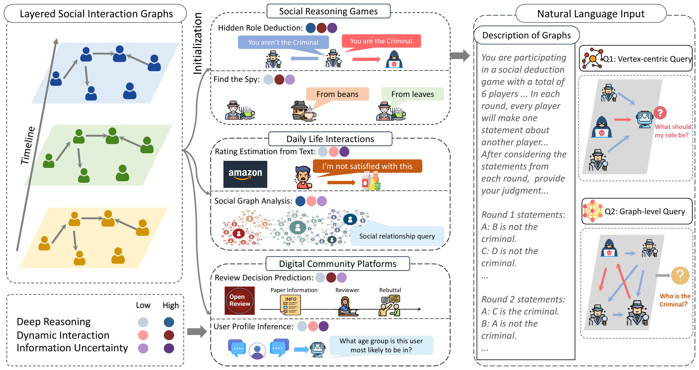

Evaluating and enhancing social reasoning in LLMs across six tasks in complex, evolving social environments — organized along deep reasoning, dynamic interaction, and information uncertainty.
1 MBZUAI · 2 University of Southern California · 3 University of Notre Dame · 4 University of Michigan, Ann Arbor · 5 University of Chicago · 6 Microsoft

Large language models are increasingly deployed in socially grounded settings — moderating communities, analyzing media, playing social-deduction games — where success depends on social reasoning: reading context, inferring others' mental states, and reasoning about unreliable information. SocialMaze evaluates this capability in complex, evolving environments and studies how targeted reasoning interventions can improve it.
SocialMaze organizes task construction along three descriptive design axes — deep reasoning, dynamic interaction, and information uncertainty. These axes describe intended sources of task difficulty rather than latent, factor-analytic dimensions of model capability. The benchmark contains 70,000 instances across six tasks and three settings, created through a mix of algorithmic generation, authentic human data, and LLM-assisted discourse, with automated checks and targeted human validation.
The accepted paper makes three contributions:
Large language models (LLMs) are increasingly deployed in socially grounded applications, where success requires interpreting context, inferring others' mental states, and reasoning about unreliable information. Yet existing benchmarks rarely evaluate these demands jointly in complex, evolving settings. We introduce SocialMaze, a benchmark that organizes six tasks across social deduction games, daily-life interactions, and digital community platforms along three descriptive design axes: deep reasoning, dynamic interaction, and information uncertainty. These axes characterize intended sources of task difficulty rather than latent, factor-analytic dimensions of model capability. Automated checks and human validation support data quality. Evaluations of twelve proprietary and open-weight LLMs show substantial variation in the use of evolving interaction histories; stronger chain-of-thought reasoners perform better on tasks requiring deeper inference, while uncertainty consistently degrades performance. Reasoning workflows help weaker short-chain-of-thought backbones but saturate on stronger reasoners. Finally, targeted fine-tuning on curated reasoning traces substantially improves structured social-reasoning tasks, whereas transfer to language-aggregation tasks remains statistically inconclusive.
In the six-player Hidden Role Deduction evaluation, first-round accuracy at identifying the Criminal ranges from 22.4% (DeepSeek-V3) to 45.8% (o3-mini) across twelve models. Later rounds reveal substantial variation in how effectively models use the evolving interaction history.
Models with long chain-of-thought reasoning achieve substantially higher accuracy on tasks that require deep reasoning (Social Graph Analysis and Hidden Role Deduction), producing nearly 8× more output tokens on those tasks. On shallower tasks the advantage shrinks. Different model families have different strengths: reasoning-oriented models lead on structured deduction, while strong generalists such as DeepSeek-V3 and GPT-4o lead Review Decision Prediction.
As more rounds of player statements accumulate in Hidden Role Deduction, some models integrate the new evidence and others stall. Over three rounds, Gemini-2.5-Pro climbs from 43.3% to 87.6% and DeepSeek-R1 from 44.3% to 80.4%, whereas GPT-4o plateaus, moving only 39.5% → 53.3% → 53.5%. This contrast reveals sharp differences in how evaluators use temporally evolving information.
Injecting unreliable actors—an intentionally deceptive Criminal, or self-deceived Rumormonger and Lunatic roles—sharply lowers Criminal- and self-role accuracy. The effect also appears in peer review: in Review Decision Prediction, accuracy jumps once reviews appear, but 10 of 12 evaluators decline after reading the rebuttal—e.g., Llama-3.3-70B moves 26.2% → 87.4% → 72.2%. GPT-4o and DeepSeek-V3 move upward, but those increases do not survive family-wise significance correction.
On a weaker short-chain-of-thought backbone, six reasoning workflows improve Hidden Role Deduction Both-Correct accuracy by roughly +4.0 to +8.4 points, with DyFlow producing the clearest gain. On DeepSeek-R1, however, all tested workflows stay within ±2 points of the base model, indicating saturation. Supervised fine-tuning on curated reasoning traces raises Both-Correct accuracy from 15.4% to 26.0% for Llama-3.1-8B and from 20.4% to 31.0% for Phi-4. Transfer is robust on Social Graph Analysis, borderline on Find the Spy, and statistically inconclusive on the three language-aggregation tasks.
SocialMaze organizes six tasks into three real-world-inspired settings, and positions each task along three descriptive design axes—Deep Reasoning, Dynamic Interaction, and Information Uncertainty. Per-task instance counts below are from the paper's task overview.
Total across six tasks: 70,000 instances.
SocialMaze is built on a graph-based formalization of social scenarios. Participants and their evolving interactions are modeled as layered social interaction graphs over a timeline, and tasks pose vertex-centric queries (about one actor), edge-centric queries (about a relationship), or graph-level queries (about the whole scenario), rendered as natural-language input. This lets the benchmark vary intended task difficulty along the three design axes.
The flagship task, Hidden Role Deduction, asks a model to read several rounds of player statements and identify both the true Criminal and its own role; the headline evaluation uses six players and three rounds. Data combines algorithmic generation, authentic human sources (Amazon, Google Play, and Taobao reviews; OpenReview submissions and decisions), and LLM-assisted discourse. Algorithmic tasks use solvability and uniqueness checks, while targeted human validation supports the quality of sampled instances—for example, annotators could uniquely identify the Spy in 91% of sampled Find-the-Spy instances and recover the true rating in 83% of sampled LLM-generated Rating-Estimation instances.
The benchmark's most representative task, Hidden Role Deduction, is released on the Hugging Face Hub as MBZUAI/SocialMaze in a convenient question-answering format.
200,000 instances · 100,000 easy + 100,000 hard · CC-BY-4.0 license · each instance provides a system prompt (game rules), a user prompt (all player statements across rounds plus the two questions), the ground-truth answer (true Criminal and Player 1's role), and an algorithmically generated step-by-step reasoning chain.
from datasets import load_dataset
# Hidden Role Deduction, QA format (splits: "easy", "hard")
ds = load_dataset("MBZUAI/SocialMaze", split="hard")This 200,000-instance Hugging Face release is an expanded QA-format release of Hidden Role Deduction. The paper's full SocialMaze benchmark—all six tasks, 70,000 instances—and the evaluation code are available separately in the project's GitHub repository.
SocialMaze is a Findings of EMNLP 2026 benchmark for evaluating and enhancing social reasoning in large language models, previously presented as a Spotlight Talk at SocialSim @ COLM 2025. It organizes six tasks across three settings along three descriptive design axes — deep reasoning, dynamic interaction, and information uncertainty. These axes describe intended sources of task difficulty rather than latent dimensions of model capability. The benchmark contains 70,000 instances, supported by automated checks and targeted human validation.
Prior social-reasoning benchmarks often rely on static scenarios, present overly sanitized information without noise or deception, and use tasks too simple to challenge strong models. SocialMaze targets all three gaps at once: it has dynamic multi-round interaction, deliberately unreliable information (intentional deception and distorted self-perception), and tasks that demand deep, multi-step inference rather than surface-level cues.
The three settings and their tasks are: Social Reasoning Games — Hidden Role Deduction (20,000 instances) and Find the Spy (6,000); Daily-Life Interactions — Rating Estimation from Text (6,000) and Social Graph Analysis (20,000); and Digital Community Platforms — Review Decision Prediction (12,000) and User Profile Inference (6,000). Each task is positioned to stress different combinations of deep reasoning, dynamic interaction, and information uncertainty.
Hidden Role Deduction is SocialMaze's flagship task: a configurable social-deduction game in which a model reads rounds of player statements and must identify both the true Criminal and its own assigned role. The headline evaluation uses six players and three rounds, and the task is marked High on all three descriptive design axes. An expanded QA-format release is available on Hugging Face.
Social reasoning is far from solved. In the six-player Hidden Role Deduction evaluation, first-round Criminal-identification accuracy ranges from 22.4% to 45.8% across twelve models. Strong chain-of-thought models such as DeepSeek-R1 and Gemini-2.5-Pro improve markedly as more rounds accumulate — Gemini-2.5-Pro reaches 87.6% by the third round — while GPT-4o plateaus near 53%. Accuracy degrades further under deception and information uncertainty.
The accepted paper evaluates reasoning workflows and targeted fine-tuning on curated reasoning traces. Workflows improve a weaker short-chain-of-thought backbone by roughly 4.0 to 8.4 percentage points on Hidden Role Deduction but saturate on DeepSeek-R1. Supervised fine-tuning produces a 10.6-point Both-Correct gain on both Llama-3.1-8B and Phi-4; transfer is robust for Social Graph Analysis and statistically inconclusive for language-aggregation tasks.
The Hidden Role Deduction task is available on the Hugging Face Hub as MBZUAI/SocialMaze in a question-answering format: 200,000 instances (100,000 easy and 100,000 hard) released under a CC-BY-4.0 license. Code for the full benchmark is on GitHub at github.com/xzx34/SocialMaze.
Cite SocialMaze when your work involves evaluating social reasoning or theory of mind in LLMs, social-deduction games, multi-turn or dynamic social interaction, robustness of reasoning under deception or information uncertainty, or LLM agents and fine-tuning for complex social tasks. See the When to Cite This Paper section below for a ready-to-use citation sentence.
SocialMaze is a useful reference when your work touches any of the following:
A typical citation: Xu et al. (2026) introduce SocialMaze, a six-task benchmark for evaluating and enhancing social reasoning in complex social environments, and show that reasoning workflows help weaker backbones while targeted fine-tuning transfers most clearly to structured reasoning tasks.
datasets library.@inproceedings{xu2026socialmaze,
title={{SocialMaze}: A Benchmark for Evaluating and Enhancing Social Reasoning in Large Language Models in Complex Social Environments},
author={Xu, Zixiang and Wang, Yanbo and Huang, Yue and Zhuang, Haomin and Zhou, Yujun and Ye, Jiayi and Li, Sixian and Song, Zirui and Gao, Lang and Wang, Chenxi and Chen, Zhaorun and Pan, Wang and Zhao, Yue and Zhao, Jieyu and Zhang, Xiangliang and Chen, Xiuying},
booktitle={Findings of the Association for Computational Linguistics: EMNLP 2026},
month={October},
year={2026},
address={Budapest, Hungary},
publisher={Association for Computational Linguistics},
note={To appear}
}